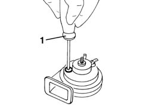

5550B34 horn tone - adjust
- Path
- Procedures > 55 ELECTRICAL EQUIPMENT > 5550 MANOEUVRING AND WARNING SIGNALS > 5550B horns > 5550B34 horn tone - adjust
- Kind
- repair procedure (removal / refitting; the operation number is the code)
- Applies to
- all engines; all production periods
- Interactive page
- https://sloeber94.github.io/elrnDB-a156/en/#/3238480
Applies to: all engines; all production periods
5550B30 l/h or r/h horn (one) - r+r
1. Operate on the IU+2019 suitable screw and adjust the tone of the IU+2019 warning horn.

Applies to: all engines; all production periods
Test the IU+2019 warning horn to check if the tone is suitable.